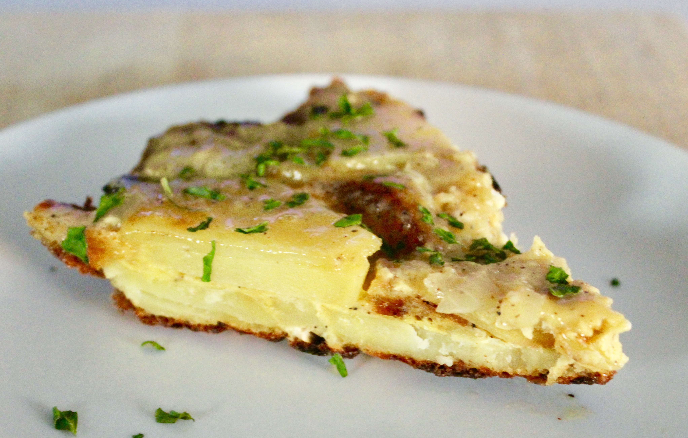

Tortilla Española recipe

Unlike most omelets, a Spanish tortilla is served at room temperature. It is the classic tapa, prepared all over Spain.
This is a typical dish of Spanish cuisine,it will surely impress
your friends and family.
While eating it with just potatos is fine,it
is pretty common to accompany it with onions,salami and others.
Ingredients:
Steps:
- Start by adding your sliced potatoes
to hot olive oil in a heavy pan in medium heat.
- Saute onions in olive oil
-
Beat eggs,add cooked onion and mix.
-
Drain potatoes,wait for them to cool down and stir them into the onion with
egg mixture.
-
Gently pour the tortilla batter into a frying pan over medium-low heat.
You don’t want the pan to be too hot.
Gently cook the tortilla for about six to eight minutes on the first side.
- To flip the tortilla grab a large plate — it must be larger than the frying pan! See my note below about the
two tortilla trick to make this easier. Put the plate on top of the pan and flip quickly and confidently.
It will be runny, but don’t worry — you’ll put everything back into the pan to cook the other side!
-
Slide the tortilla back into the frying pan and let the other side cook for
another six to eight minutes (let it cook longer if you like your tortilla
fully cooked through). Then flip back out onto a clean plate. Allow it to
cool for at least ten minutes before slicing and enjoying.